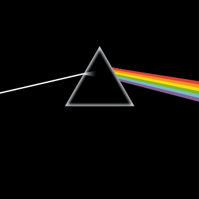
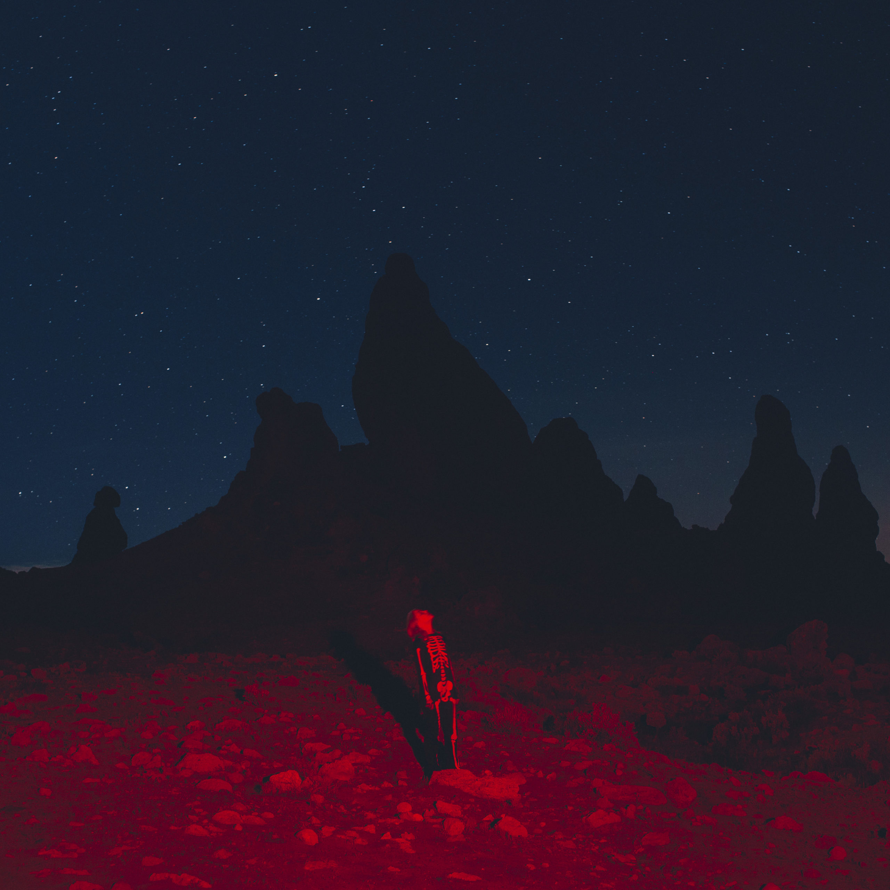
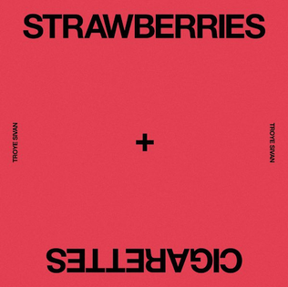

Did you hear a song in the lobby and go "whoa, what is that?" Well, you're in luck! Here's a list of the lobby songs!
Note: Some songs contain strong language. They are marked.
| Cover | Title | Artist(s) | Album | Year | Duration | Explicit? |
|---|---|---|---|---|---|---|
| "Peach" | BROODS | Don't Feed the Pop Monster | 2018 | 4:15 | No | |
| "yoshi's island" | glass beach | the first glass beach album | 2019 | 6:18 | Yes | |
| "What A Heavenly Way To Die" | Troye Sivan | Bloom | 2018 | 3:07 | No | |
| "Meet Me in the Woods" | Lord Huron | Strange Trails | 2015 | 4:21 | Yes | |
| "California Dreamin'" | The Mamas & the Papas | If You Can Believe Your Eyes & Ears | 1965 | 2:42 | No | |
| "PPP" | Beach House | Depression Cherry | 2015 | 6:09 | No | |
| "Last Friday Night (T.G.I.F)" | Katy Perry | Teenage Dream | 2011 | 3:51 | No | |

|
"Radio" | Rammstein | untitled* | 2019 | 4:37 | Nein (No) |

|
"Young God" | Halsey | Badlands | 2015 | 3:00 | Yes |
| "Long Lost" | Lord Huron | Long Lost | 2021 | 4:44 | No | |
|  | "Time" | Pink Floyd | The Dark Side of the Moon | 1973 | 6:54 | No |
| "Snow on the Beach (feat. More Lana Del Rey)" | Taylor Swift, Lana Del Rey | Midnights (The Til Dawn Edition) | 2023^ | 3:49 | Yes | |
| "Heaven or Las Vegas" | Cocteau Twins | Heaven or Las Vegas | 1990 | 4:58 | No | |
|  | "Chinese Satellite" | Pheobe Bridgers | Punisher | 2020 | 3:37 | No |
| "Prayer X" | King Gnu | Sympa | 2019 | 3:15 | いや (No) | |

|
"Gooey" | Glass Animals | ZABA | 2014 | 4:49 | No |
| "BLUE" | Troye Sivan, Alex Hope | Blue Neighbourhood | 2015 | 3:31 | No | |
| "The Milk Carton" | Madilyn Mei | (none)**** | 2023 | 5:10 | No | |
| "Pool House" | The Backseat Lovers | When We Were Friends | 2018 | 4:29 | No | |
| "I Will Not Bow" | Breaking Benjamin | Dear Agony | 2009 | 3:36 | No | |
| "Winter Bird" | AURORA | All My Demons Greeting Me as a Friend | 2016 | 4:04 | No | |

|
"Disturbia" | Rihanna | Good Girl Gone Bad: Reloaded | 2008 | 3:58 | No |
| "Alleluia, Nativitas" | Pérotin, Ensemble Gilles Binchois, Dominique Vellard** | Les chant des cathédrales | 2003** | 9:29 | Minimē (No) | |
| "CANDLEBURN (Dorm Demo)" | Rabbitology | (none)**** | 2023 | 3:11 | No | |

|
"Turn The Page - Live" | Bob Segar | Greatest Hits*** | 1994 | 5:02 | No |
|  | "Strawberries & Cigarettes" | Troye Sivan | (none)**** | 2018 | 3:21 | No |
| "Party In The U.S.A" | Miley Cyrus | The Time of Our Lives | 2009 | 3:22 | No | |
| "The Last Rose of Summer" | Celtic Woman | A New Journey | 2007^^ | 3:36 | No | |
| "The Bridge" | Alec Holowka | NITW (OST, Vol. 2) [Hold onto Anything]***** | 2017 | 7:02 | No | |
| "STUPID" | NOAHFINNCE | STUFF FROM MY BRAIN | 2021 | 2:35 | Yes | |
| "Therian Wolf" | Autumn J. | (none)**** | 2023 | 2:30 | Yes | |
| "Daft Pretty Boys (Explicit)" | Bad Suns | Disappear Here | 2016 | 3:07 | Yes | |
| "Silly" | Troye Sivan | Something To Give Each Other | 2023 | 3:38 | Yes | |

|
"Dark Paradise" | Lana Del Rey | Born To Die - The Paradise Edition | 2012 | 4:03 | No |
| "Worn" | Tenth Avenue North | The Struggle | 2012 | 4:04 | No | |
| "White Wedding (Pt. 1)" | Billy Idol | Billy Idol | 1982 | 4:12 | No | |

|
"Prickly Pufferfish" | galen tipton | Nymph Tones | 2022 | 1:47 | No |
| "cold weather" | glass beach | the first glass beach album | 2019 | 2:18 | Yes | |
| "Cure For Me" | AURORA | The Gods We Can Touch | 2022 | 3:21 | No | |
| "Moon Snatcher" | Vindkaldr | Ambient I | 2015 | 8:19 | No |
*The name of the album isn't untitled. It literally has no name lol.
**Originally composed by Pérotin in the 12th century, performed by the Ensemble in 2003.
***The studio original was released in 1973 on Segar's album Back in '72.
****This song was released as a single.
*****Full album name:
Night in the Woods (Original Soundtrack, Vol. 2) [Hold onto Anything]
^Originally released on Midnights as a solo in 2022 and released on Midnights (The Til Dawn Edition) in 2023 with Lana.
^^This was originally a poem by Thomas Moore. It was released to the tune of "The Young Man's Dream" in 1813.